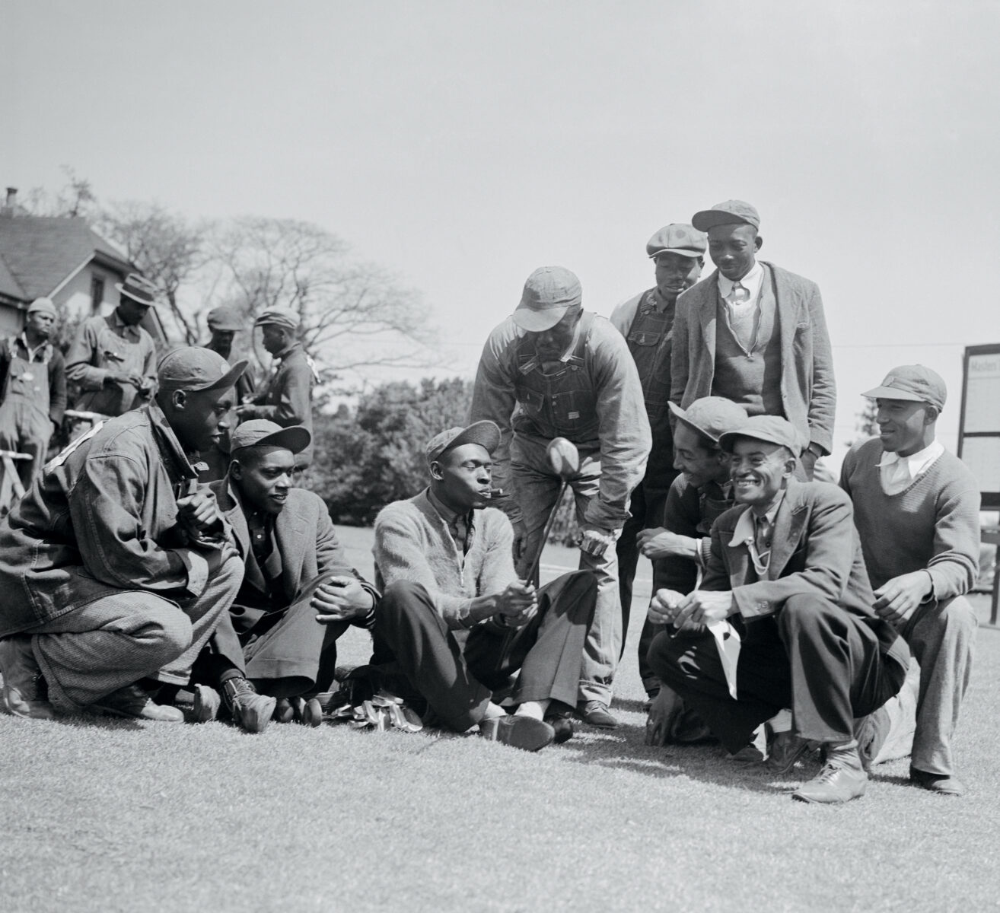
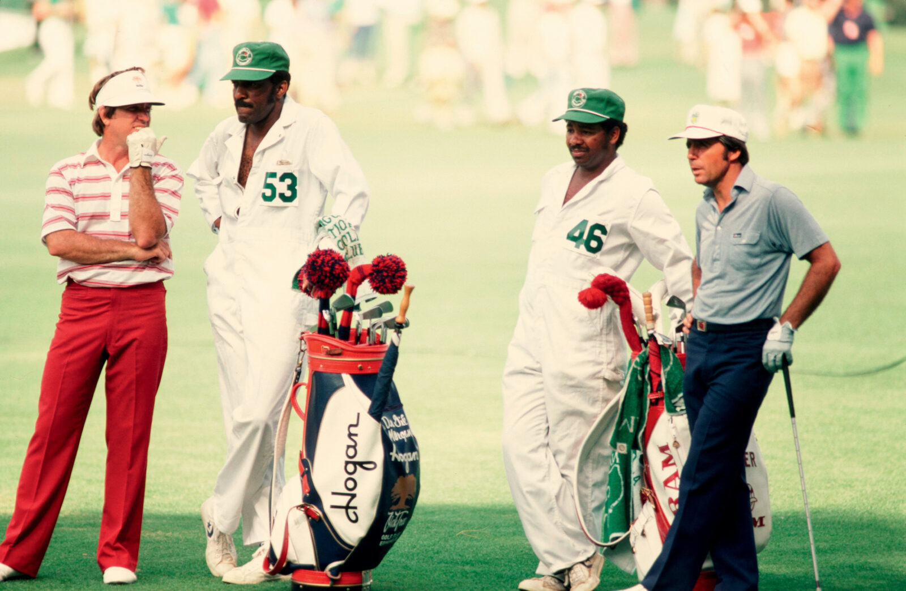
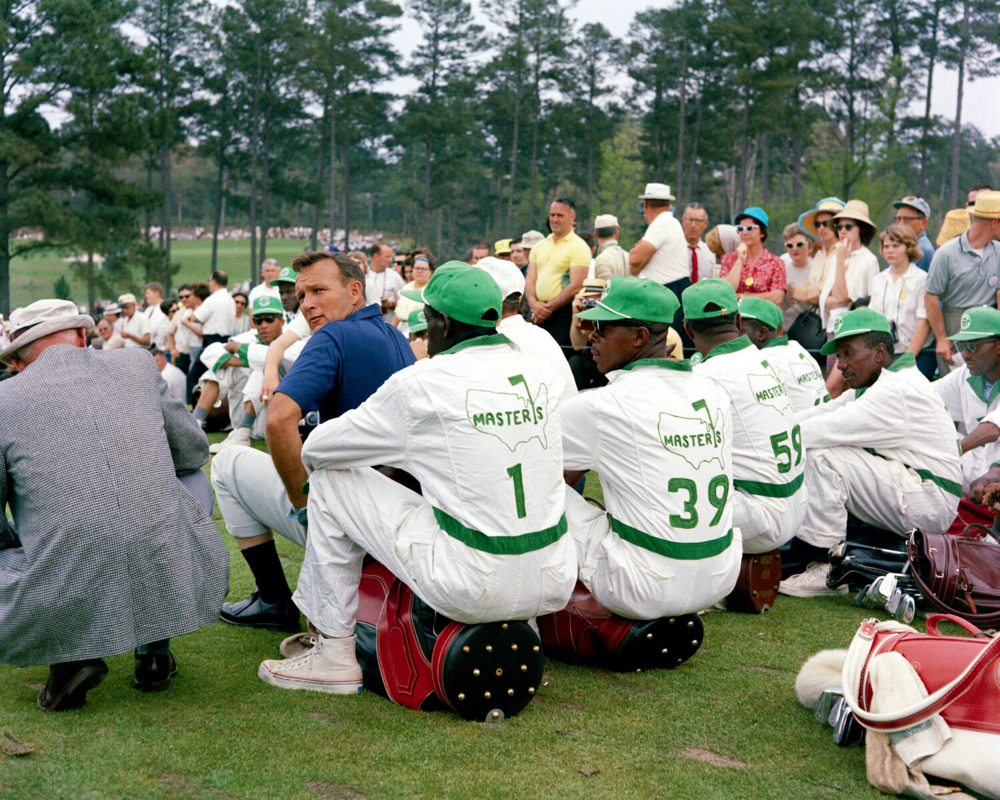
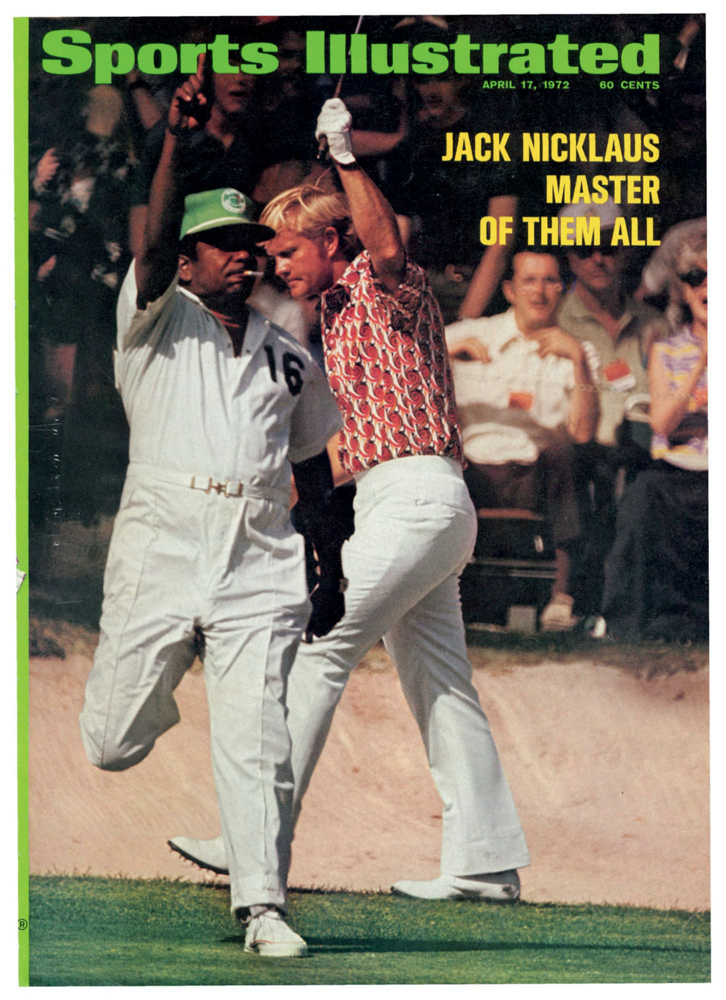

Group of Black caddies together during the Masters. Source: Adam Marton
In a small cardroom at the back of a municipal golf course clubhouse in Augusta, Georgia, a handful of old men gather and reminisce.
Do you remember when…? How about that time…? What about when Willie Peterson wound up on the cover of Sports Illustrated back in seventy-two? Wasn’t that something?
All prompts, meant to bring back sweet memories. As they deal cards, the men talk about their golf games and trade good-natured jabs. They have known one another for more than sixty years, gave one another their nicknames.
Jim “Big Boy” Dent. Robert “Cigarette” Jones. Tommy “Burnt Biscuits” Bennett. Ike “Stabber” Choice.
As long as ailments don’t keep them confined to the house, they can be found here a couple of days a week, playing bid whist, ribbing one another, and recalling the days when they were part of Augusta National Golf Club’s all-Black caddie corps, which players were required to use during the annual spring Masters Tournament.
From the competition’s inception in 1934, the caddies—born of Augusta and attuned to the land—could be a golfer’s secret weapon coming around Amen Corner or for surviving other notoriously tricky holes like No. 4, Flowering Crab Apple, or No. 10, Camellia.
These men were no beasts of burden, but talented prognosticators who turned a racist policy, rooted in subjugation, into a livelihood and a source of esteem—one that, ironically, first added diversity to the game of golf.
Men like Willie Peterson, who was on the bag for five of Jack Nicklaus’s six Masters victories. Or Willie “Cemetery” Perteet, President Dwight D. Eisenhower’s personal caddie at Augusta National during the fifties.
When the club bent to pressure in 1982 and dropped the ban on outside caddies, the change rocked the corps—many of its members, including those who counted on that crucial tournament paycheck to tide them over till the seasonal club reopened in October, had to look for other work.
In the four decades since, recognition for the pivotal part these men played in the game, until recently, scarcely existed.
Even today, they aren’t heralded in the Augusta Museum of History, or mentioned in any of the historical milestones or records on the Masters website.
But as their numbers dwindle—of the seventy-six caddies enlisted in 1982, only twenty or so are still living—they’re at long last beginning to be honored as what many of yesteryear’s golfers always knew them to be: the Pride of Augusta.
An elite group of men who changed the game forever.
In a small cardroom at the back of a municipal golf course clubhouse in Augusta, Georgia, a handful of old men gather and reminisce.
Do you remember when…? How about that time…? What about when Willie Peterson wound up on the cover of Sports Illustrated back in seventy-two? Wasn’t that something?
All prompts, meant to bring back sweet memories. As they deal cards, the men talk about their golf games and trade good-natured jabs. They have known one another for more than sixty years, gave one another their nicknames.
Jim “Big Boy” Dent. Robert “Cigarette” Jones. Tommy “Burnt Biscuits” Bennett. Ike “Stabber” Choice.
As long as ailments don’t keep them confined to the house, they can be found here a couple of days a week, playing bid whist, ribbing one another, and recalling the days when they were part of Augusta National Golf Club’s all-Black caddie corps, which players were required to use during the annual spring Masters Tournament.
From the competition’s inception in 1934, the caddies—born of Augusta and attuned to the land—could be a golfer’s secret weapon coming around Amen Corner or for surviving other notoriously tricky holes like No. 4, Flowering Crab Apple, or No. 10, Camellia.
These men were no beasts of burden, but talented prognosticators who turned a racist policy, rooted in subjugation, into a livelihood and a source of esteem—one that, ironically, first added diversity to the game of golf.
Men like Willie Peterson, who was on the bag for five of Jack Nicklaus’s six Masters victories. Or Willie “Cemetery” Perteet, President Dwight D. Eisenhower’s personal caddie at Augusta National during the fifties.
When the club bent to pressure in 1982 and dropped the ban on outside caddies, the change rocked the corps—many of its members, including those who counted on that crucial tournament paycheck to tide them over till the seasonal club reopened in October, had to look for other work.
In the four decades since, recognition for the pivotal part these men played in the game, until recently, scarcely existed.
Even today, they aren’t heralded in the Augusta Museum of History, or mentioned in any of the historical milestones or records on the Masters website.
But as their numbers dwindle—of the seventy-six caddies enlisted in 1982, only twenty or so are still living—they’re at long last beginning to be honored as what many of yesteryear’s golfers always knew them to be: the Pride of Augusta.
An elite group of men who changed the game forever.
For thousands of years, the Savannah River’s overflowing waters dumped sand, silt, and detritus onto what would one day become Augusta, leaving fertile soil in their wake.
By 1858, three hundred or so particularly arable acres landed in the hands of Louis Mathieu Edouard Berckmans and his son Prosper Jules Alphonse, Belgian immigrants and horticulturists with an interest in fruit and ornamental trees and shrubs.
All told, the Berckmans cultivated more than three hundred varieties of peach trees alone and grew a million-plus fruit trees, turning Berckmans Nursery into the first large-scale plant source of its kind in the Southeast.
Folks around Augusta simply called it “Fruitland.”
More than seventy years later, in 1931, the Georgia-born golf champion Bobby Jones and his partner, Clifford Roberts, bought the nursery’s spread with plans to fashion a golf course from its landscape.
Fruitland Manor became the clubhouse of the new Augusta National Golf Club.
Immediately south lies Sand Hills, a Black neighborhood listed on the National Register of Historic Places where most of the caddies grew up.
Still, the community felt like “one big family,” recalls Jim Dent.
Willie Lee Stokes was born in 1920 on a parcel of the property where his family tended cotton and corn.
When Augusta National opened in 1932, Stokes became the personal caddie for Clifford Roberts, who dubbed him “Pappy.”
Stokes’s roots on the land gave him an advantage—he knew how to read the fairways and greens better than others.
Stokes understood that every putt would break toward Rae’s Creek, the pull of gravity sending balls toward the lowest point on the property.
Augusta National first put on what would come to be called the Masters Tournament in 1934 with its rule in place—golfers would always be white, and the caddies would always be Black.
In 1938, the seventeen-year-old Stokes won his first Masters as a caddie for Henry Picard.
He later won four more Masters, tying for the greatest number of Masters wins by a caddie.
Stokes decided to teach the Black youth in Sand Hills what he knew.
Caddying could provide consistent income and food on the table.
By the time the second generation of caddies was born, interested boys could attend Pappy Stokes’s Saturday caddie school to learn how to read the greens and understand the game.
“We were the best caddies in the world.”
Many in Sand Hills worked in one of the area cotton mills, bringing home a mere fifteen or so dollars a week for the hot, backbreaking job.
A strong young boy, eager to please and willing to work rain or shine, could make more than that caddying.
The kids could also earn around a dollar a day shagging balls, golf-speak for chasing balls hit from the practice tee.
“Oh, it was fun,” says Jim Dent, now eighty-four. “We were young. We didn’t know what we were doing. We just enjoyed life. You make five dollars there, and that was a big payday back then.”
But it was also survival, Tommy Bennett emphasizes.
He was raised by his grandmother after his mother left the city in search of work.
To ease hardship, Bennett used to sneak onto Augusta National as a boy of eleven to seek out work.
Back then he was so small that his body routinely gave out—he didn’t have the energy to finish walking the course.
Clubs made of wood and steel weighed far more than modern clubs made with titanium and graphite.
A bag could weigh as much as fifty pounds with rain gear.
“I was happy to start and happy to finish,” Bennett says.
In those early days, ever one step away from being called “boy,” this second generation of caddies became known instead by the nicknames they gave one another.
Bennett became Burnt Biscuits. Jones became Cigarette. Dent became Big Boy. Choice became Stabber.
The best caddies employ the properties and laws that govern space, time, energy, and matter—but using only their eyes and ears to assess equations that are always changing.
Every day they wake up, walk the greens, and run their calculations again, adjusting for a golfer’s strengths, weaknesses, and equipment.
Caddies must be naturalist, physicist, and psychologist, all wrapped in one white coverall.
That dynamic played out during the 1979 Masters, when Jariah “Bubba” Beard was on the bag for Fuzzy Zoeller.
Zoeller later admitted he arrived at Augusta with no real plan.
Beard told him where to hit, where not to hit, and how to navigate the course.
By relying on Beard, Zoeller became the last Masters player to win the tournament on his first try.
Ben Crenshaw also credited Carl Jackson as a critical part of his success.
Crenshaw said Jackson helped him countless times and remained his trusted caddie throughout his career.
Jackson caddied his first Masters at age fourteen and ultimately worked fifty-four tournaments.
“We were the best caddies in the world,” Beard said.
But Beard also recalled the bitterness of segregation.
“We were not allowed in the clubhouse,” he said. “We were in the caddie pen; that’s where you better stay.”
Despite the disrespect, many caddies used the work as a stepping stone for a better life.
Jim Dent eventually became a professional golfer himself in 1966.
The game enabled him to send all of his children to college and buy a house for the aunt who raised him.
In later decades, golf modernized and television networks brought more money into the sport.
Prize purses swelled, and players increasingly built personal teams that traveled with them year-round.
Many golfers began to feel that using a local caddie at the Masters instead of their regular caddie worked to their disadvantage.

Black caddies during the Masters. Source: Adam Marton
Those complaints came to a head at the 1982 Masters Tournament after heavy spring rain delayed the third round until Sunday morning.
Confusion over the start time left some players without their assigned caddies.
One golfer even sent his wife out to shag balls for him.
PGA players asked Augusta National chairman Hord Hardin to lift the ban on outside caddies.
Hardin complied.
The following year, only eighteen of the tournament’s eighty-two players used Augusta National’s Black caddies.
White caddies, now eager and able to work at the country’s most prestigious course, began taking spots in the caddie corps.
“Money,” Robert Jones says, “changed the world.”
After the ban was lifted, some younger Black caddies tried to recover financially by traveling around the world.
They advised golfers in Hawaii, Scotland, and Japan.
When Tommy Bennett first hit the road, he traveled in cramped vans with other caddies.
“We might’ve had ten people in it,” Bennett recalls. “It was hard living.”
Some caddies slept four to a room.
Bennett eventually made his way to New York, then Los Angeles, and later Palm Springs.
He even caddied for Tiger Woods during Woods’s first Masters appearance in 1995.
Dent found even greater success as a player on the Senior PGA Tour, winning twelve tournaments.
Jones later caddied for Dent during one of his major wins in Chattanooga.
Others, past their prime or unwilling to relocate, left golf entirely.
Some picked up odd jobs or learned new trades.
Others remained in Augusta National’s caddie corps.

Caddies sitting together during the Masters. Source: Adam Marton
The world of caddying changed dramatically in the four decades after the Masters ban was lifted.
Jones says the biggest check he ever earned was maybe forty-five hundred or forty-six hundred dollars.
Now, Dent notes that caddies can make more money in one win than some people see in a lifetime.
Black faces on the greens have also largely disappeared.
“We only have two Black people on the PGA Tour right now,” Dent points out. “When I was out on tour, we had fourteen at one time.”
That remains one of the great ironies of Augusta’s all-Black caddie rule.
It was archaic and rooted in racism, yet it also gave these men access to a world where they could learn, excel, and build futures through golf.
Living in Augusta means holding multiple truths at once.
The city is known for its beauty and flowering plants, earning the nickname Garden City.
But it also carries a history of racial oppression and exclusion.
Though the Black caddies played a pivotal role in Augusta’s reputation as a golf mecca, they went without celebration for decades.
Even Black residents did not always understand the significance of what the caddies had achieved.
Leon Maben, who has collected oral histories of the Black caddies since 2019, grew up in downtown Augusta away from the golf world.
“Golf was for the guys up on the hill,” he explains. “Growing up, we always said, ‘Man, that’s a white man’s sport.’”
But a business opportunity eventually brought Maben back to the golf course and led him to reconsider the history of his hometown.
Now, with help from local university student Courtney Wilson, he interviews surviving caddies to preserve their stories.
“This is Black history,” Maben says. “Nowhere else could you say Black people dominated this facet of the sport for fifty years.”
The number of surviving old-school Black caddies continues to shrink.
Recognition has come slowly and often too late.
Lee Elder—a former caddie who broke the Masters race barrier as a player in 1975—died in 2021.
In 2023, Jariah Beard died from cancer, and John Luther Elam Jr., who helped desegregate Augusta Municipal Golf Course, also passed away.
The Lucy Craft Laney Museum of Black History and Conference Center has played an important role in honoring these men.
Since early 2023, the museum has hosted “Men on the Bag: The Stories of Augusta’s Famous Black Caddies.”
Young actors portray iconic caddies and bring their stories to life for new generations.
The museum celebrates men like George “Fireball” Franklin, Nathaniel “Iron Man” Avery, John H. “Stovepipe” Gordon, and Frank “Marble Eye” Stokes.
Though they may not appear in golf’s official record books, their legacy lives on.
But that legacy is not limited to the past.
When asked about the future of Augusta’s Black golfers, Bennett and Jones point to one man: André Lacey II.
Lacey is Jim Dent’s grandson, though he says he came to golf on his own.
By the time he was born, the golden era of Augusta’s Black caddies had already ended.
He learned the game at the E. W. Hagler Boys & Girls Club in Augusta.
After personal struggles in his twenties, he returned to golf and eventually became a PGA of America Golf Associate in 2015.
Now, when he is not working as assistant men’s and women’s golf coach at Paine College, he spends much of his time mentoring young people.
He works to ensure they understand the many opportunities golf can provide.
Through his nonprofit, André Frantz Golf, he provides free instruction, equipment, and resources to people who want to learn the game.
“I take a lot of pride in being an ambassador and spreading the game,” Lacey says.
“Golf is a game for everyone to enjoy. I want to help as many people as I can.”
The pride of Augusta is also the name of a yellow jasmine plant that blooms each spring.
Like the caddies and their ancestors, it existed on this land long before Augusta National.
It grows by adapting to every challenge it encounters.
Each spring, the flowers bloom just in time for the Masters.
As private jets fly into Augusta and crowds gather at Augusta National, André Lacey II continues mentoring young golfers nearby.
He teaches fundamentals, builds confidence, and expands access to the sport.
“There’s no other sport as natural as golf,” Lacey says. “It’s the only life sport, where you can play it at a hundred years old.”
The camp ends at noon, and depending on the day, Lacey may head to the Patch afterward.
There, in the beloved clubhouse and cardroom, the old caddies still gather.
Perhaps they play cards. Perhaps they tell stories.
Perhaps one reminds another of a simple truth.
“Every day is a good day.”
And as private jets roar overhead toward Augusta National, the Black golfers of Augusta shoulder their bags and head toward the first tee.

Sports Illustrated Black Caddy on the Cover. Source: Adam Marton